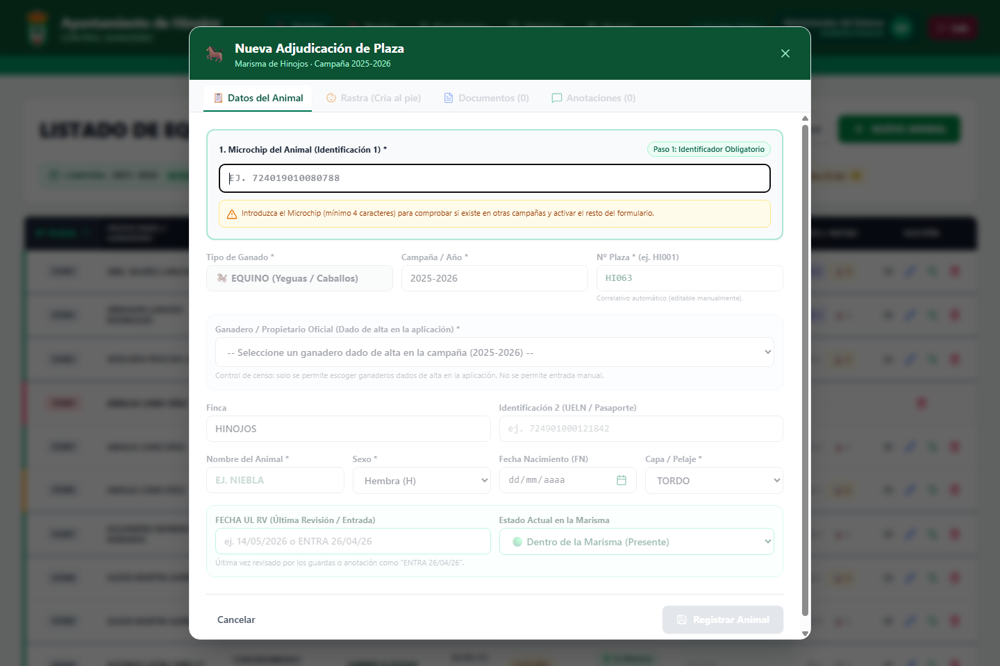
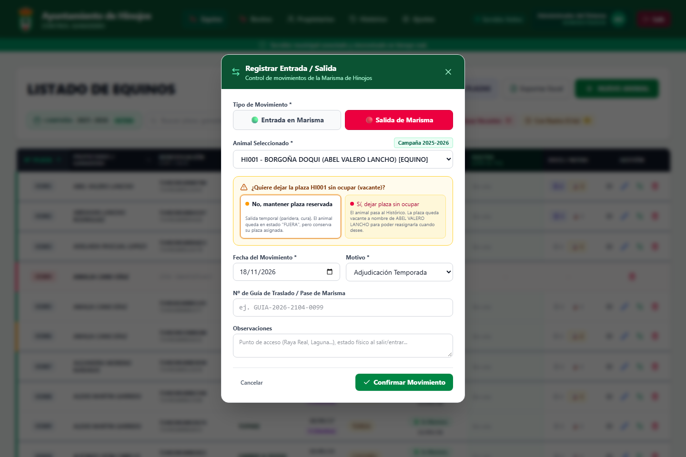
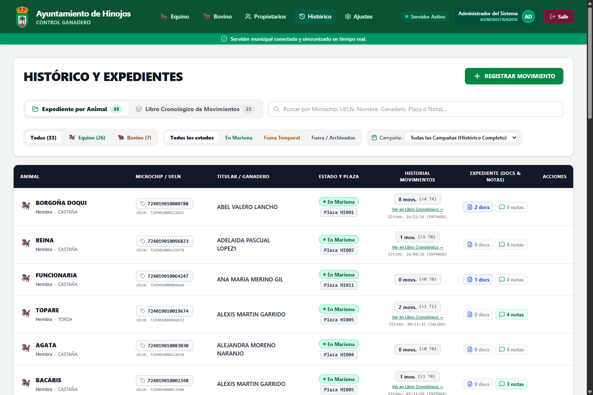
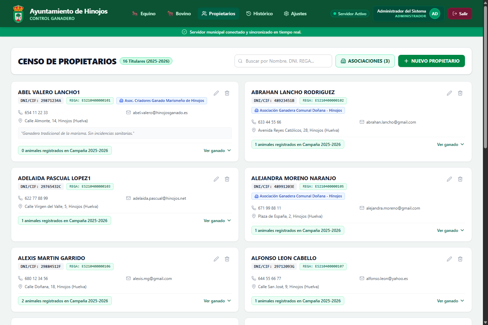
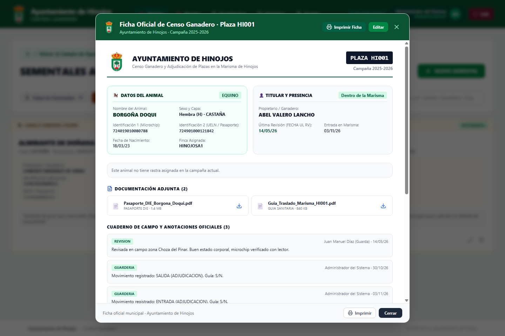
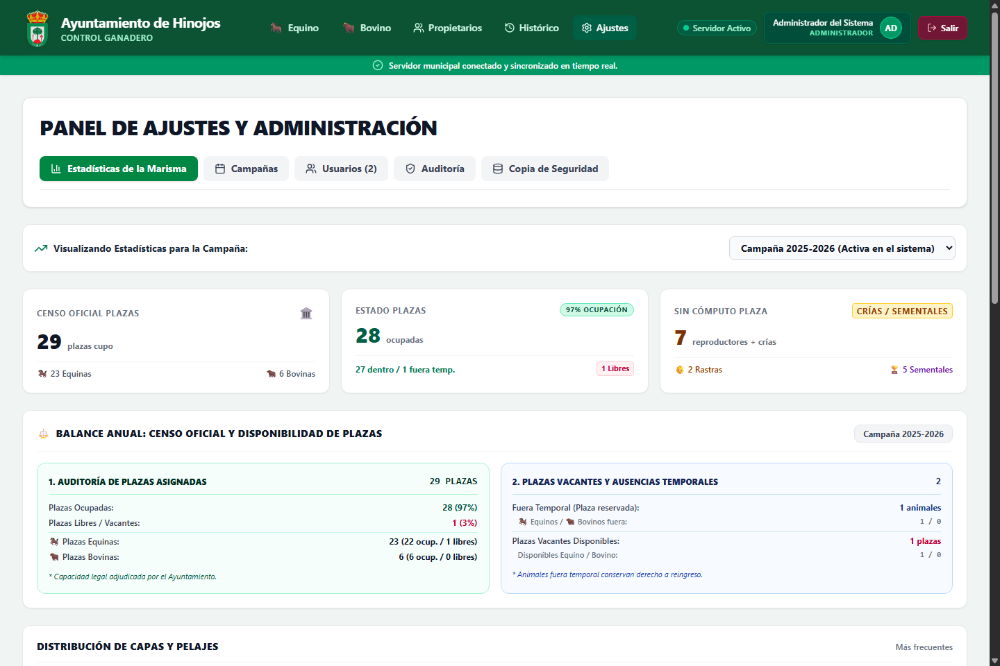
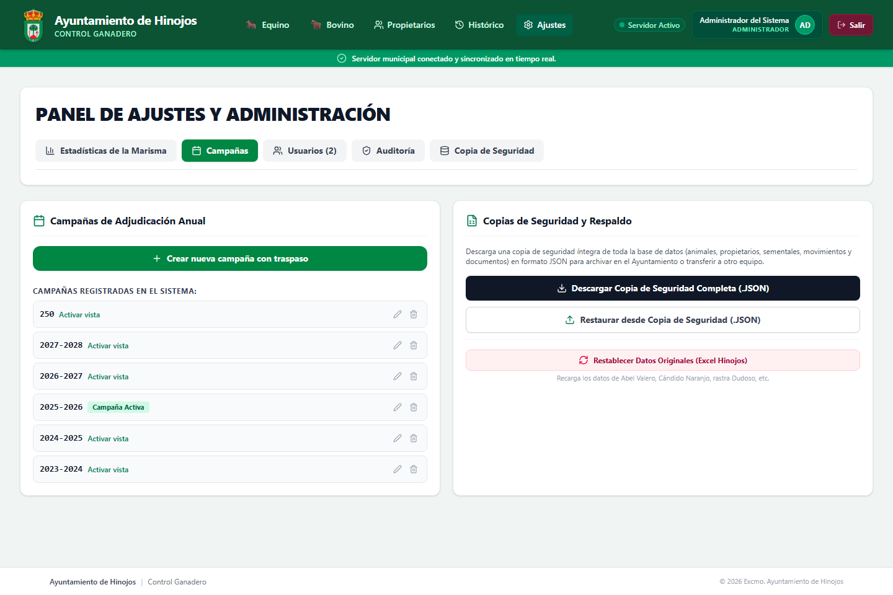
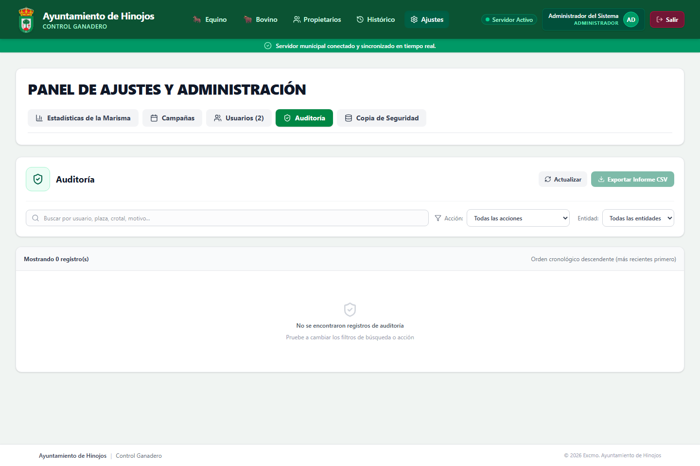

Guía Práctica e Intuitiva de Uso Diario
MANUAL DE USUARIO
Sistema de Gestión Ganadera y Censo Municipal
Marisma de Hinojos (Doñana)
Censo Oficial · Adjudicación de Plazas · Trazabilidad de Movimientos · Libros Oficiales
Índice de Contenidos del Manual de Usuario
- Introducción: ¿Qué es el Sistema de Gestión Marisma?
- Conceptos Clave que Debes Conocer Antes de Empezar
- Acceso al Sistema y Gestión de la Sesión
- El Censo de Animales (Equinos y Bovinos)
- Guía Paso a Paso: Cómo Dar de Alta un Nuevo Animal
- Consulta de Ficha Oficial del Animal e Impresión con Escudo
- Trazabilidad de Movimientos: Salidas Temporales, Entradas y Bajas
- Intercambio y Permuta de Plazas entre Ganaderos
- Directorio de Ganaderos y Asociaciones Ganaderas
- Libro Oficial de Sementales (Reproductores Autorizados)
- Panel de Ajustes y Administración (Solo Administradores)
- Estadísticas de ocupación y carga ganadera en la marisma.
- Campañas anuales y Asistente de Traspaso de socios y censo.
- Gestión de usuarios y contraseñas.
- Auditoría oficial de operaciones realizadas.
- Descarga y restauración de Copias de Seguridad en archivo .ZIP.
- Exportación de Libros Oficiales a Excel / OpenDocument (.ODS)
- Preguntas Frecuentes y Solución de Problemas Habituales (FAQ)
1. Introducción: ¿Qué es el Sistema de Gestión Marisma?
Bienvenido al manual oficial de la aplicación Gestión Marisma 2. Este sistema ha sido desarrollado expresamente para el Ayuntamiento de Hinojos con el objetivo de gestionar y controlar de manera digital, ágil y transparente toda la actividad ganadera que se desarrolla en los terrenos comunales de la Marisma de Hinojos, dentro del entorno protegido del Parque Nacional de Doñana.
Con esta aplicación podrás consultar en tiempo real qué animales están pastando dentro de la marisma, a qué ganadero pertenece cada plaza adjudicada, registrar nacimientos, salidas temporales y bajas, emitir fichas oficiales para imprimir con el escudo del Ayuntamiento y generar los libros oficiales para la Junta de Andalucía y las asociaciones ganaderas.
2. Conceptos Clave que Debes Conocer
| Concepto |
¿Qué significa en la Marisma de Hinojos? |
| Campaña Ganadera |
Es el ejercicio anual ganadero (por ejemplo, 2025-2026). Cada campaña tiene su propio censo oficial. Cambiar de campaña en la aplicación te permite consultar años anteriores sin alterar los datos actuales. |
| Número de Plaza |
Es el identificador físico y legal adjudicado por el Ayuntamiento. Los equinos llevan el prefijo HI seguido de tres cifras (ej. HI001, HI002). Los bovinos llevan el prefijo HIN (ej. HIN001). |
| Cómputo de Cupo |
Representa el número máximo de cabezas ordinarias autorizadas a pastar. Solo descuentan plazas los animales titulares adjudicados (estén dentro o fuera temporalmente). |
| Sementales Reproductores |
Son los caballos y toros sementales aprobados para la cubrición comunal. Pastan en la marisma pero NO descuentan plazas del cupo del ganadero. |
| Rastras al pie |
Son los potros o terneros lactantes que acompañan a su madre. Mientras sean crías lactantes, tampoco descuentan plazas de cupo. |
| Bovinos sin nombre |
Por normativa zootécnica de vacuno, las vacas y toros no tienen nombre. Se identifican únicamente por su Crotal Oficial y su Plaza HINxxx. |
| Salida Temporal |
Ocurre cuando una yegua o vaca sale temporalmente de la marisma para parir, curarse o ir a feria. Su plaza queda reservada y nadie puede ocuparla. |
3. Acceso al Sistema y Gestión de la Sesión
3.1. Inicio de Sesión Oficial
Para acceder a la plataforma, abre tu navegador web habitual (Google Chrome, Microsoft Edge, Firefox o Safari) y entra en la dirección web facilitada por el Ayuntamiento. Te aparecerá la ventana de acceso oficial:
Figura 3.1: Pantalla oficial de inicio de sesión con validación de credenciales municipales.
1
Introduce tu Nombre de Usuario: Escribe tu usuario municipal (por ejemplo, antonio o candido).
2
Introduce tu Contraseña: Escribe tu clave secreta de acceso.
3
Pulsa «Iniciar Sesión Oficial»: El sistema verificará tus credenciales y te dará acceso inmediato a la pantalla principal.
⚠️ Medida de Seguridad Municipal
Si se introducen 5 contraseñas erróneas de forma consecutiva, el sistema bloqueará temporalmente el acceso durante 15 minutos por seguridad para evitar accesos no autorizados.
3.2. Conociendo la Cabecera Principal
En la parte superior de la pantalla siempre tendrás visible la barra institucional del Ayuntamiento de Hinojos:
- Escudo de Hinojos: Pulsar sobre el escudo te regresa inmediatamente al Censo Equino.
- Pestañas de Navegación: Equino (🐎), Bovino (🐂), Propietarios (👥), Histórico (🕒) y Ajustes (⚙️).
- Indicador de Servidor Activo: Un botón verde con punto luminoso que confirma que la base de datos municipal está conectada en tiempo real.
- Nombre y Rol del Usuario: Te muestra con qué usuario estás trabajando (ej. Administrador del Sistema o Consulta).
- Botón «Salir» (rojo): Cierra tu sesión de forma segura y limpia los datos de acceso del navegador. ¡Úsalo siempre al terminar en un ordenador compartido!
4. El Censo de Animales (Equinos y Bovinos)
La pantalla principal de trabajo es el Listado del Censo. Se divide en dos secciones principales accesibles desde la cabecera: Equino (yeguas, caballos y potros) y Bovino (vacas y toros).

Figura 4.1: Tabla oficial de Censo Equino con numeración de plazas HIxxx, titulares, microchips, capas y botones de gestión.
4.1. Filtros Rápidos y Buscador en Tiempo Real
Justo encima de la tabla dispones de herramientas inteligentes para encontrar cualquier animal al instante:
- Buscador en Vivo: Escribe cualquier texto (número de plaza como
HI005, nombre del animal como BORGOÑA, nombre del ganadero como ABEL o los últimos dígitos del chip). La tabla se filtrará automáticamente mientras escribes.
- Botones de Estado Rápido:
- En Marisma: Muestra únicamente los animales que están físicamente pastando en el campo.
- Fuera (Temporal): Muestra animales que han salido temporalmente pero que mantienen su plaza reservada.
- Plazas Vacantes: Muestra plazas que están legalmente adjudicadas a un ganadero pero que actualmente no tienen animal asignado.
- Con Rastra (Cría): Muestra únicamente las hembras que tienen una cría al pie lactando.
- Selector de Campaña: El desplegable verde (ej.
Campaña: 2025-2026) te permite cambiar de año ganadero con un solo clic para consultar censos históricos.
4.2. Censo Bovino: La Regla de los Animales Sin Nombre
Al pulsar sobre la pestaña Bovino, la tabla se adapta a la normativa zootécnica de vacuno:

Figura 4.2: Listado de Censo Bovino. Obsérvese que las vacas y toros no tienen nombre; se identifican por Plaza HINxxx y Crotal Oficial.
💡 ¿Por qué no aparece el nombre en Bovinos?
Por tradición zootécnica y normativa de trazabilidad en la Marisma de Hinojos, el ganado vacuno marismeño se identifica exclusivamente por el
Crotal Oficial y su
Plaza HINxxx. La columna "Nombre" no existe para evitar confusiones.
5. Guía Paso a Paso: Cómo Dar de Alta un Nuevo Animal
Para adjudicar una nueva plaza o dar de alta un animal en el censo oficial, pulsa el botón verde «+ NUEVO ANIMAL» situado en la esquina superior derecha del listado.

Figura 5.1: Ventana de alta. El Paso 1 es obligatorio y comprueba duplicados históricos automáticamente.
Sigue estos sencillos pasos:
1
Paso 1 Obligatorio (Identificador Primario):
Introduce el número de
Microchip (para caballos/yeguas) o el
Crotal Oficial (para vacas/toros).
- Si el animal ya existe en la campaña actual, saldrá un aviso rojo bloqueante para impedir duplicados.
- Si el animal estuvo en campañas anteriores, ¡el sistema lo reconocerá de inmediato y rellenará automáticamente su nombre, capa, sexo y ganadero!
2
Selecciona el Ganadero Titular:
Despliega la lista y elige el ganadero al que se le adjudica la plaza. Solo se pueden seleccionar ganaderos que estén dados de alta oficialmente en la aplicación.
3
Comprueba el Número de Plaza:
El sistema te sugerirá el siguiente número correlativo disponible (ej. HI063 para equinos o HIN007 para bovinos). Si lo necesitas, puedes modificarlo manualmente.
4
Completa los Datos del Animal:
Rellena el nombre (solo en equinos), sexo (Macho o Hembra), fecha de nacimiento, capa (Castaña, Torda, Negra, Cárdena, etc.) y la fecha de última revisión por la guardería.
5
Pestaña «Rastra (Cría al pie)» (Opcional):
Si la hembra tiene una cría lactante que entra con ella a la marisma, activa la casilla "Tiene cría al pie" y anota su crotal, capa y sexo. Recuerda: esta cría no gasta cupo de plazas.
6
Pestaña «Documentos» y «Anotaciones» (Opcional):
Puedes adjuntar el PDF del Pasaporte DIE, Guías de Traslado o fotografías del hierro/marca, y añadir notas del cuaderno de campo.
7
Pulsa «Registrar Animal»: El animal quedará registrado oficialmente y aparecerá al instante en el censo.
6. Ficha Oficial del Animal e Impresión con Escudo
En cualquier momento puedes consultar el expediente completo de cualquier animal censado. Para ello, busca el animal en la tabla y pulsa sobre el icono del ojo (👁️) situado en la columna Gestión.

Figura 6.1: Ficha oficial imprimible con escudo municipal, plaza destacada, documentación adjunta y cuaderno de campo.
¿Qué información contiene la Ficha Oficial?
- Encabezado Oficial: Escudo heráldico del Ayuntamiento de Hinojos y número de plaza destacado (ej.
PLAZA HI001).
- Datos Zootécnicos: Nombre, sexo, capa, microchip/crotal, fecha de nacimiento y código UELN.
- Titular y Estado de Presencia: Ganadero propietario, última fecha de revisión en campo y estado actual (Dentro de la Marisma o Fuera Temporal).
- Documentación Adjunta: Enlaces directos para descargar y ver los PDFs del Pasaporte DIE, Guías Sanitarias y certificados oficiales.
- Cuaderno de Campo Histórico: Registro cronológico de todas las anotaciones y revisiones realizadas por los guardas de la marisma.
🖨️ Cómo Imprimir la Ficha en Papel
En la parte superior derecha de la ficha tienes el botón
«Imprimir Ficha». Al pulsarlo, el navegador abrirá el diálogo de impresión con un formato normalizado y limpio, listo para archivar en las carpetas municipales o entregarlo en mano al ganadero.
7. Trazabilidad de Movimientos: Salidas, Entradas y Bajas
El control de entradas y salidas es fundamental para que la guardería municipal sepa en todo momento qué animales están dentro de Doñana y qué animales están fuera con plaza reservada.
Para registrar un movimiento, pulsa el botón con dos flechas horizontales (⇄) en la fila del animal.

Figura 7.1: Modal de registro de movimiento. Permite elegir si la salida es temporal (reserva plaza) o definitiva (libera plaza).
Cómo gestionar una Salida de la Marisma:
-
Salida Temporal (Paridera, cura, feria):
Marca la opción «No, mantener plaza reservada». El animal cambia a estado Fuera (Temporal). Su plaza continúa reservada para ese animal y el ganadero conserva su derecho de reingreso intacto.
-
Baja o Salida Definitiva:
Marca la opción «Sí, dejar plaza sin ocupar». El animal pasa al archivo histórico y la plaza queda como Plaza Vacante a nombre del ganadero para que pueda introducir otro animal cuando lo desee.
Consulta del Histórico de Movimientos
Pulsando sobre la pestaña Histórico en la cabecera superior, accederás al Libro Oficial de Trazabilidad:

Figura 7.2: Registro cronológico de todos los movimientos de entradas, salidas y bajas con filtro por campaña o trayectoria histórica completa.
8. Intercambio y Permuta de Plazas entre Ganaderos
Cuando dos ganaderos acuerdan intercambiar sus animales de plaza, no es necesario dar de baja y volver a crear los animales. Dispones de la herramienta oficial «INTERCAMBIAR PLAZAS» situada sobre la tabla de censo.

Figura 8.1: Asistente de permuta directa de plazas con confirmación en 1 clic.
- Selecciona la Plaza A (primer animal y ganadero).
- Selecciona la Plaza B (segundo animal y ganadero).
- Revisa el recuadro verde de Vista Previa del Resultado de la Permuta para verificar que los cambios son exactamente los deseados.
- Escribe una breve observación (ej. "Permuta acordada en asamblea de la asociación").
- Pulsa «Confirmar Intercambio»: el sistema actualiza ambas fichas y registra la operación en la auditoría municipal.
9. Directorio de Ganaderos y Asociaciones
Accediendo a la pestaña Propietarios encontrarás el censo de todos los ganaderos dados de alta en la campaña activa:

Figura 9.1: Tarjetas de ganaderos con DNI validado, REGA de explotación, asociación y recuento de animales censados.
Asistente de Validación de DNI / CIF (Módulo 23)
Al dar de alta o editar un ganadero con el botón «+ NUEVO PROPIETARIO», la aplicación cuenta con un asistente inteligente: si introduces el DNI sin letra o con una letra errónea, aparecerá un botón azul: «Asignar letra oficial correcta: [X]» que calculará matemáticamente la letra oficial según las normas del Ministerio del Interior.
10. Libro Oficial de Sementales (Reproductores)
Pulsando el botón amarillo «SEMENTALES» accederás al registro municipal de sementales reproductores autorizados:

Figura 10.1: Registro municipal de caballos y toros sementales aprobados para la cubrición comunal en la Marisma de Hinojos.
⚠️ Regla Municipal Fundamental
Los sementales registrados en este libro pastan en la marisma para garantizar la raza y la cubrición del ganado comunal, pero
NO descuentan plazas de cupo del ganadero titular.
11. Panel de Ajustes y Administración (Solo Administradores)
Si tienes rol de ADMINISTRADOR, tendrás acceso a la pestaña Ajustes, que contiene cinco herramientas fundamentales para la gestión del municipio:
11.1. Estadísticas de la Marisma

Figura 11.1: Cuadro de mandos con porcentaje de ocupación, plazas asignadas vs vacantes y recuento de animales pastando.
Permite auditar el cumplimiento del cupo oficial (ej. 29 plazas), distinguiendo entre animales titulares, plazas vacantes, y animales que no computan plaza (sementales y rastras lactantes).
11.2. Gestión de Campañas y Asistente de Traspaso

Figura 11.2: Listado cronológico de campañas ganaderas y botón de creación de nueva campaña con clonación asistida.
Al pulsar «+ Crear nueva campaña con traspaso» se abre el asistente inteligente que te permite crear el nuevo año ganadero (ej. 2026-2027) clonando automáticamente todos los socios y sus plazas de la campaña anterior, ahorrando horas de trabajo manual.
11.3. Gestión de Usuarios y Accesos

Figura 11.3: Panel de usuarios del sistema. Permite dar de alta a nuevos empleados, guardas o administrativos.
Puedes crear usuarios con dos niveles de permiso:
- ADMINISTRADOR: Control total (alta, edición, borrado, permutas, ajustes, campañas, copias de seguridad).
- CONSULTA: Solo lectura. Puede buscar, ver fichas y consultar censos pero no puede modificar datos ni acceder a ajustes.
11.4. Auditoría Municipal

Figura 11.4: Registro de auditoría con buscador en tiempo real y exportación de informe oficial a CSV para Excel.
Cada vez que alguien da de alta un animal, cambia una plaza, registra una salida o descarga una copia de seguridad, queda grabado con su nombre, fecha, hora e IP. Nadie puede borrar este registro.
11.5. Copias de Seguridad (.ZIP) en 1 Clic

Figura 11.5: Módulo de respaldo y restauración en archivo .ZIP completo.
Pulsando el botón verde «Descargar Copia de Seguridad Completa (.ZIP)», obtendrás en un solo archivo todo el censo, la base de datos, el historial de auditoría y todas las fotos y pasaportes PDF guardados. ¡Ideal para guardarlo en un lápiz USB o disco externo del Ayuntamiento!
12. Exportación de Libros Oficiales a Excel / OpenDocument (.ODS)
En la parte superior de las tablas de Equino y Bovino encontrarás el botón «Exportar Excel»:
-
Libro Oficial de Equinos (.ODS): Genera un libro maestro completo con 4 hojas de cálculo normalizadas según el modelo oficial del Ayuntamiento de Hinojos:
Censo Equino: Listado completo de animales censados y plazas adjudicadas.Sementales: Registro oficial de sementales reproductores autorizados.Expediente Histórico: Relación detallada de todas las anotaciones y revisiones.Libro de Movimientos: Historial cronológico de entradas, salidas y bajas.
-
Censo Oficial de Bovinos (.ODS): Genera la plantilla municipal exacta de 1 hoja con todos los crotales, capas y plazas vacunas.
💡 Total compatibilidad
Los archivos generados en formato
.ods se abren de forma nativa e impecable tanto en
Microsoft Excel como en
LibreOffice Calc y Google Sheets.
13. Preguntas Frecuentes y Solución de Problemas (FAQ)
¿Qué hago si al intentar dar de alta un animal me dice que el Microchip ya existe?
Si el aviso es en color rojo, significa que ese animal ya tiene una plaza asignada en la campaña activa actual. Comprueba la lista de animales para verificar en qué plaza se encuentra. Si el animal estaba en una campaña pasada, el aviso será verde y simplemente te precargará sus datos sin bloquearte.
Un ganadero ha sacado una yegua a parir fuera de la marisma. ¿Debo darle de baja?
¡NO! No debes darle de baja. Debes registrar un movimiento de tipo «Salida de Marisma» y seleccionar «No, mantener plaza reservada». De este modo, la yegua figurará como Fuera (Temporal), nadie podrá ocupar su plaza y conservará su derecho a reingresar cuando la cría esté lista.
¿Cómo puedo imprimir la lista completa de equinos o bovinos?
Puedes pulsar el botón «Exportar Excel» para descargar el libro oficial e imprimirlo desde Excel o LibreOffice, o bien utilizar la opción de imprimir del navegador (Ctrl + P) que cuenta con estilos optimizados para papel.
¿Qué ocurre si se va la luz o se apaga el ordenador mientras trabajo?
No te preocupes. La aplicación se comunica de forma continua con la base de datos municipal en la nube. Cada vez que pulsas "Guardar", los datos quedan asegurados inmediatamente en el servidor.
¿A quién debo acudir en caso de incidencia informática?
Para cualquier duda técnica, fallo de conexión o restablecimiento de contraseñas de usuario, ponte en contacto con el Departamento de Informática del Ayuntamiento de Hinojos o el administrador del sistema en el correo informatica@hinojos.es.